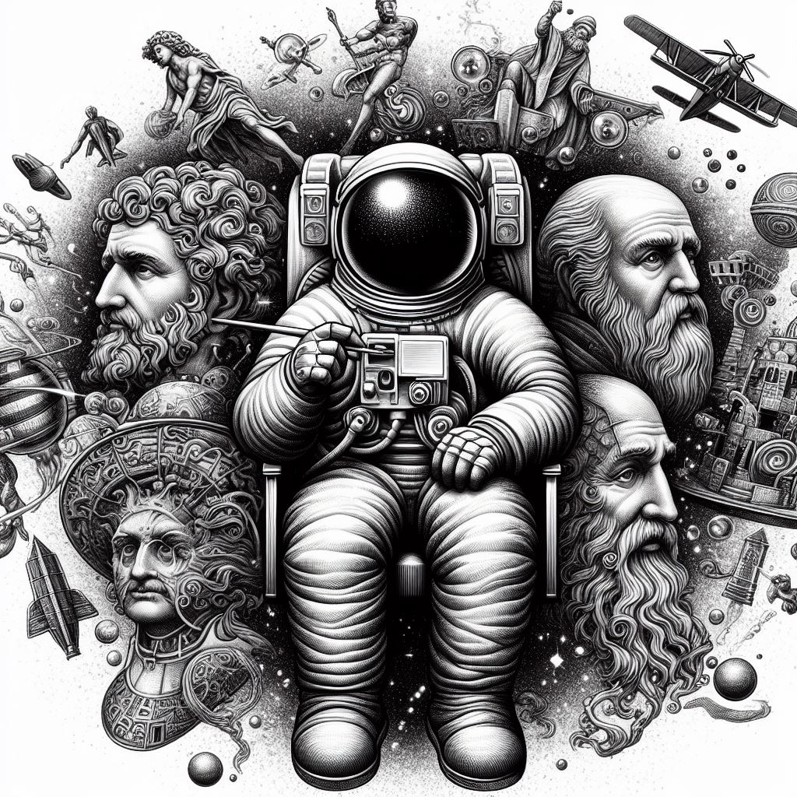

Na Yves Tech, nossa filosofia é inspirada na crença de que "Deus
é misericordioso", refletindo o significado do nome "Yves". Essa
convicção permeia cada aspecto de nosso trabalho, desde a forma
como nos relacionamos com nossos colaboradores até o
desenvolvimento de soluções tecnológicas inovadoras. Buscamos
aplicar a compaixão e a integridade em tudo o que fazemos,
criando um ambiente que valoriza a excelência e a
responsabilidade.
